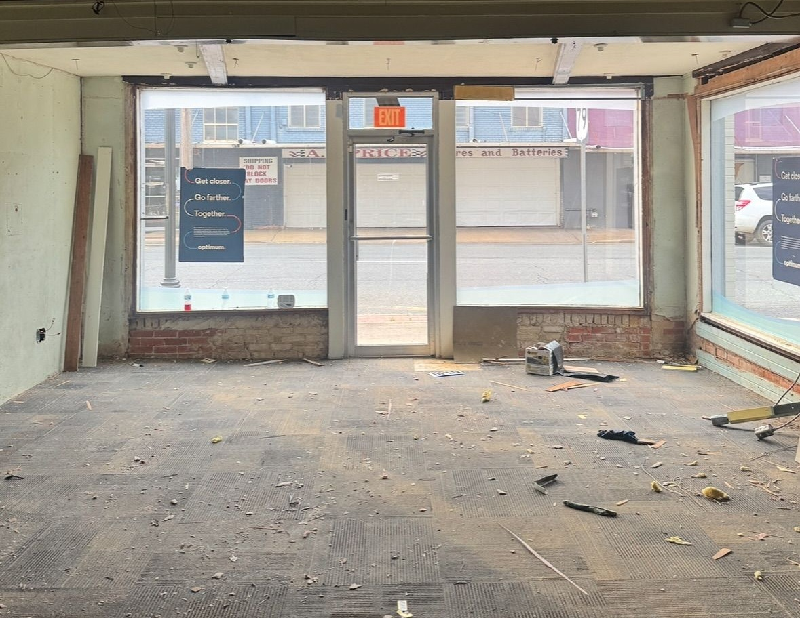
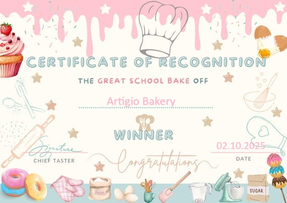
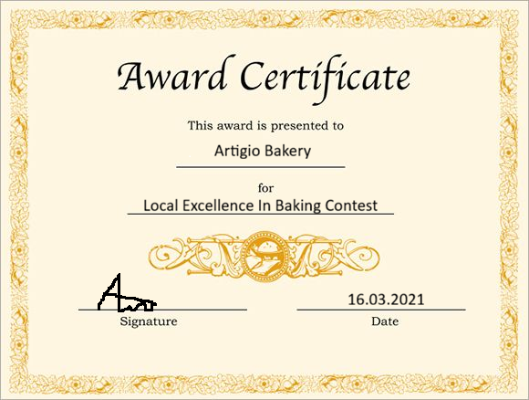
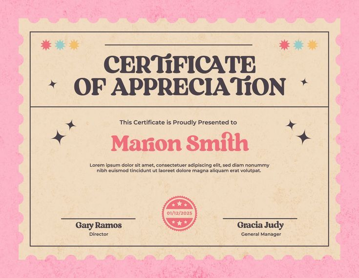
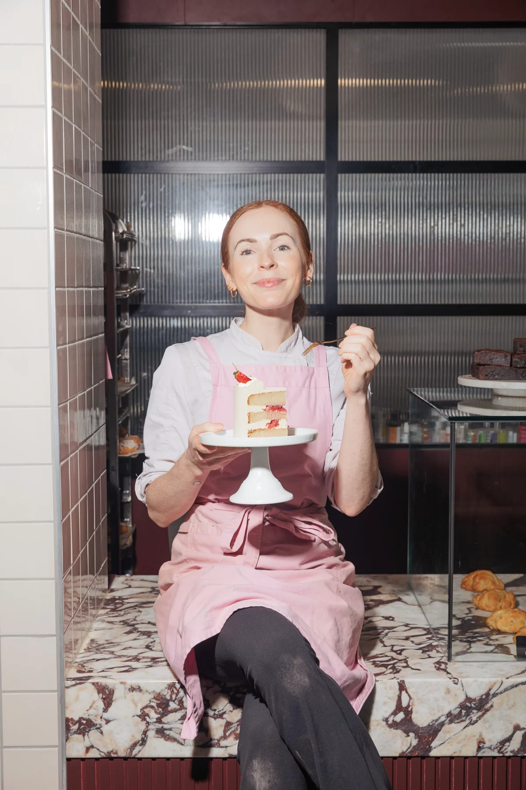
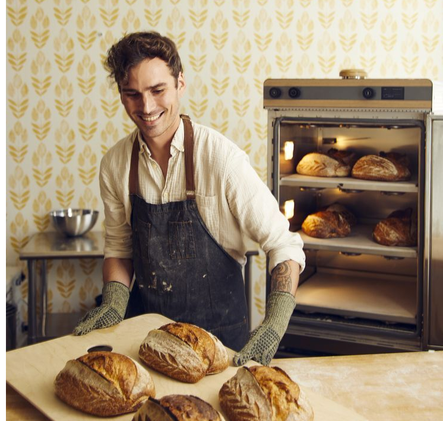
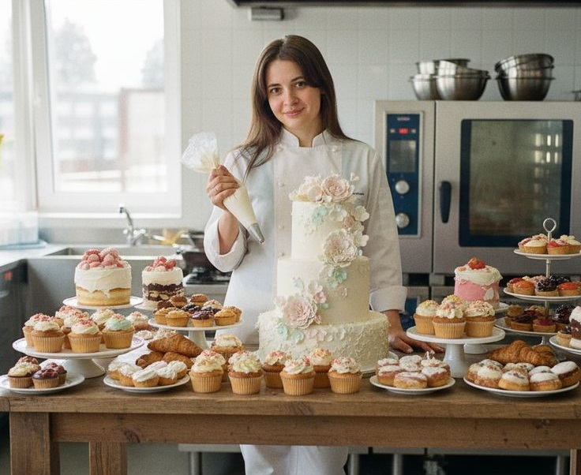

How Artigio Bakery Began
Our business began as a small family dream mainly carried by our owner, Laura Popescu, who as a child was inspired by a love for fresh bread, delicate pastries, and warm neighborhood cafés. What started as a passion for Laura and her family slowly became a welcoming local bakery where people gather for comfort, quality, and everyday sweetness. The handmade baking and original concept in the area qiuckly drew attention from the locals and even gained us national recognition over the years. From the very beginning, when our bakery was just a mere empty studio, our goal has been to create simple products with care, tradition, and attention to detail. The esteem and respect shown by our current customers is the product of Laura's hard work, paired with our top notch personnel and high-quality ingredients.

Recognition and Awards
Over time, Artigio Bakery has become appreciated not only by loyal customers, but also by the local community. Our dedication to fresh ingredients, artisan techniques, and elegant presentation has brought us recognition in various bakery events and food fairs across the country. These awards reflect our commitment to quality and our passion for making every visit feel special.

Community favorite - 2025

Local Excellence in Baking - 2021

Best Artisan Baker- 2024
Meet Our Staff
Behind every loaf, tart, and pastry is a small team that shares the same love for baking and hospitality. Our bakers and pastry chefs work with care every day to prepare fresh products and create a warm experience for every customer. Together, they bring creativity, patience, and heart to everything we serve.

Elena Marin - Pastry Chef

Luca Ionescu - Head Baker

Sofia Radu - Cake Decorator